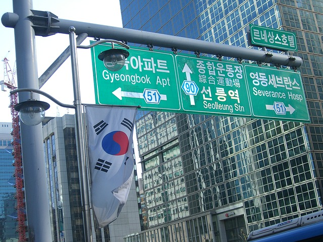

Korean, like English, has a lot of subtle sounds that your ear will have to grow accustomed to. These sounds are arranged in a way that can seem almost alien to westerners. Developing an ability to listen to Korean will be one of the main hurdles we deal with in Sero Korean Level 1. Fortunately, since you speak English you already use most of the sounds found in Korean during regular everyday speech.
Another thing to consider is that Korean is a lot moreFragment consistent than English is when it comes to representing the sounds of the language in writing. It’s going to be easier to learn to read Korean using Korean letters, than it is trying to learn Korean using English letters.
A lot of apps/textbooks try and make you use romanization to learn, which is a crutch and is completely unnecessary in Korean. In fact pronunciation of Korean words is actually so hard to represent in English that it would do moreFragment harm than good to teach it. Just to prove how bad it is to write Korean in English look at this chart containing the three most well recognized systems of romanization.
Original Korean
떡볶이는 쌀로 만들고 짱 맛있다.
Revised Romanization
Tteokbokkineun ssallo mandeulgo jjang masitda.
McCune-Reischauer Romanization
Tt'ŏkpokkinŭn ssallo mandŭlgo tchang mashitta.
Yale Romanization
ttekpokkinun ssallo mantulko ccang masissta.
Go ahead and try reading one of these romanizations. You almost certainly won't be able to come up with a sentence that could be understood by Koreans. None of these systems are good because English letters are just incompatible with Korean sound patterns. Now listen to the real pronunciation of the sentence.
(tap for translation)
In case you are wondering, they use the revised system in Korea. Almost every sign nowadays will have English listed under the Korean (since Korea has become such a hot tourist spot). You can see what we mean below.
